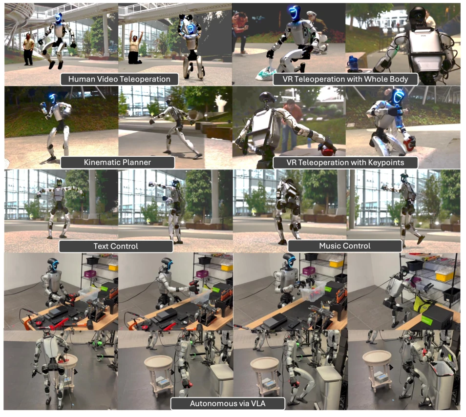
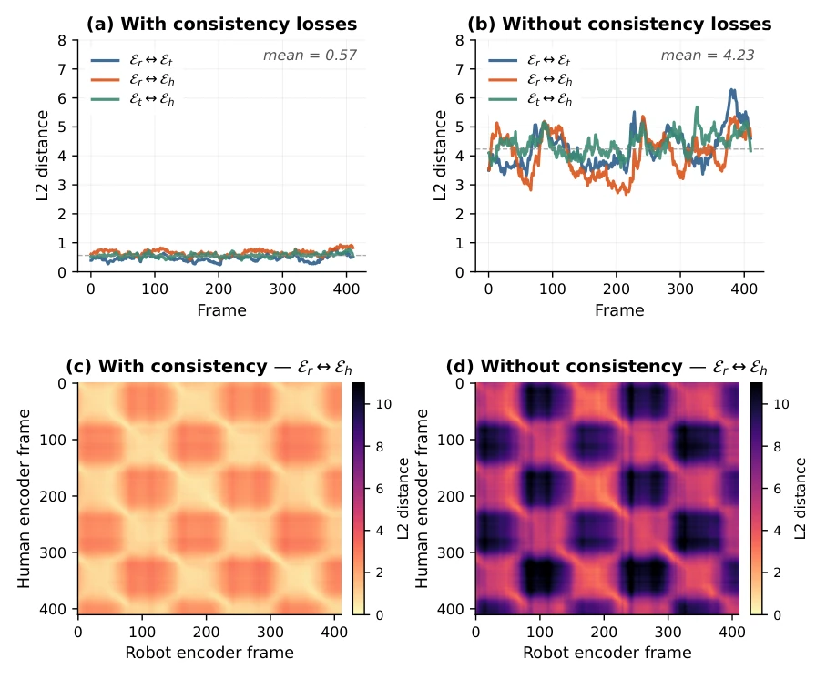
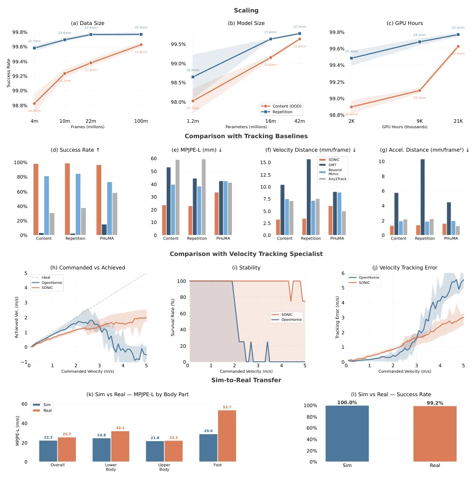
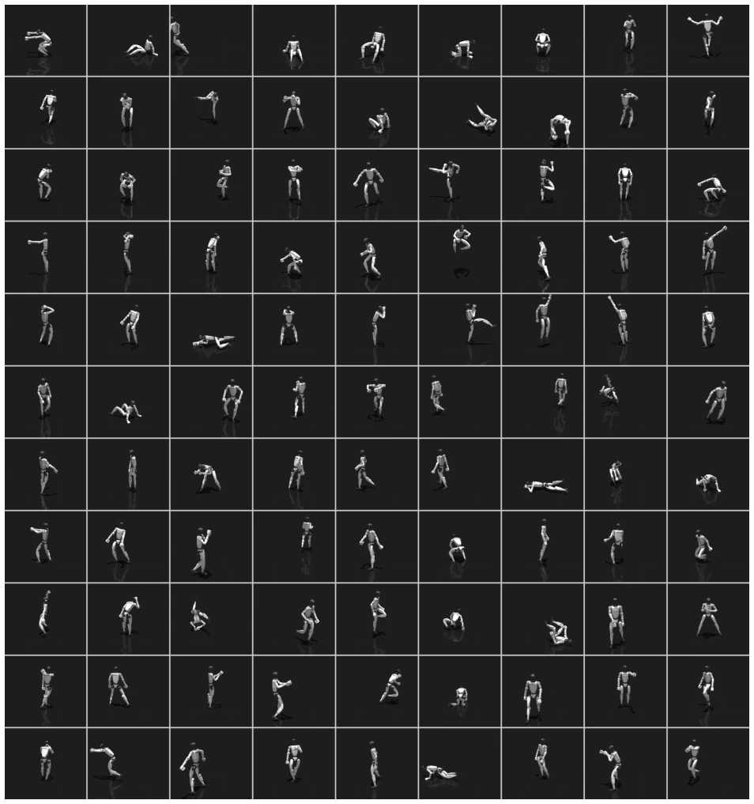
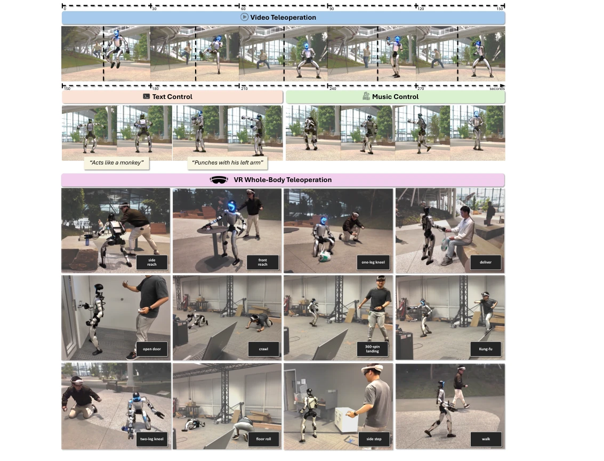
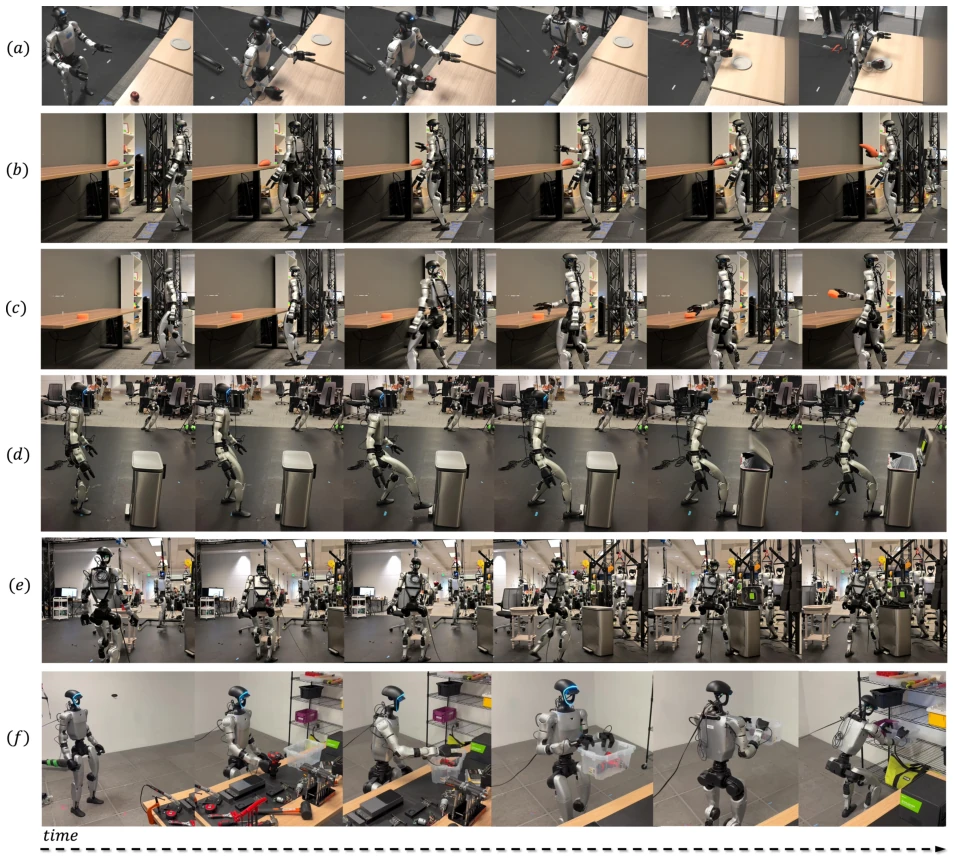
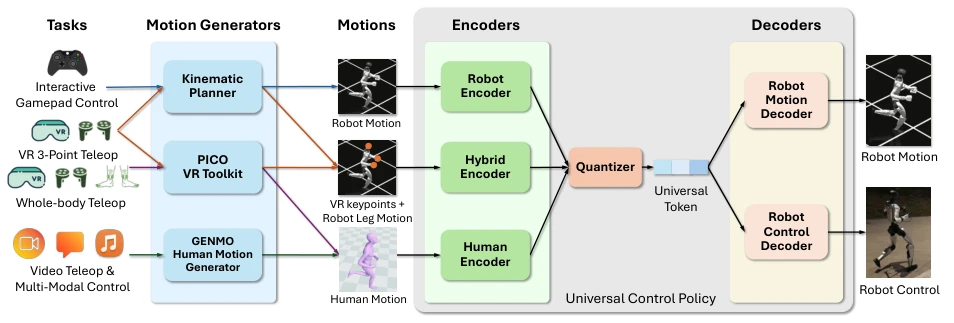

The NVIDIA team did not resort to empty talk this time, directly leveraging compute (21k GPU hours) and data (100 million frames), proving that scaling effects indeed bring improvements in generalization capabilities. The core of SONIC is not inventing new algorithms, but making the existing motion tracking task "big", and establishing a universal token space to link VR, VLA, and video control together. This move is quite smart, avoiding the pitfall of designing rewards for each task. However, the paper also admits safety and energy consumption were not discussed in depth, and falling may occur under extreme dynamics. Overall, this is a step pushing "imitation learning" towards "foundation models", although it has not fully solved the long-tail problem, but as a foundation it is very solid. It proves that in the field of robot control, Scaling Law remains valid, but the cost is huge computational resources, ordinary labs might not be able to afford it. This "great effort yields miracles" strategy, although lacking theoretical depth, is highly referenceable at the engineering implementation level, especially for scenarios requiring general capabilities.
Existing humanoid robot control strategies generally face the "small but beautiful" dilemma: small models (e.g., MLP), single tasks, relying on manually designed rewards (e.g., OpenHomie [4]). This approach is hard to scale, because each new behavior (dancing, getting up) requires redesigning the reward function, leading to poor generalization. Generative imitation methods (e.g., AMP [1]) although unified the goals, but discriminator signals easily collapse when data volume is large. This paper points out that Motion Tracking utilizes dense frame-level supervision from motion capture data, requiring no manual reward, and human MoCap data scale is huge. Therefore, taking motion tracking as a scalable base task, through scaling data, models, and compute, it is expected to obtain a general humanoid controller, solving the contradiction between "task specificity" and "scalability". This provides a new path for robot foundation models different from traditional RL.

Figure 1: SONIC enables diverse humanoid tasks through a universal control policy that handles diverse input modalities and control interfaces.
The overall framework is based on a universal control policy, the core is "multimodal input -> unified Token -> robot control". First, design three dedicated encoders (robot joints, human SMPL, mixed input), mapping heterogeneous motion commands to a shared latent space. Next, use Finite Scalar Quantization (FSQ) to generate universal Tokens, replacing VQ-VAE to avoid codebook collapse. The decoder is divided into a control decoder (output joint commands) and a motion decoder (auxiliary supervision). Training adopts PPO reinforcement learning, combined with reconstruction loss, Token alignment loss, and cycle consistency loss, ensuring different modal input aligns in latent space. Additionally, introduce a real-time motion planner, converting intent into short-term reference trajectories, supporting interactive control. At the data level, use 100 million frames of MoCap data, trained after physical plausibility filtering. Asymmetric actor-critic structure was also used during training, critic observes privileged state, actor uses only deployable observations, enhancing the robustness of the policy. This design enables the model to handle robot self-state and human demonstration data simultaneously, achieving cross-embodiment transfer learning.

Figure 8: Latent space alignment with and without consistency losses, visualized on a crawling motion. (a–b) Diagonal L2 distance between encoder pairs. (c–d) Cross-encoder distance matrices. With consistency losses, matching frames produce aligned tokens; without them, alignment breaks down.
Experiments verified the effectiveness of scaling: data volume increased from 4M to 100M frames, success rate increased from 98% to 99.6%; model parameter count increased from 1.2M to 42M, generalization significantly improved. Compared baselines (GMT, Any2Track, BeyondMimic), SONIC performed better on unseen motion content. Compared with dedicated controller OpenHomie [4], SONIC far exceeded the latter in speed tracking stability (98.5% vs 43%). Sim-to-Real verified on Unitree G1, success rate 99.2%. Finally, combined with GR00T N1.5 VLA model [5], achieved hand-eye-foot coordinated loco-manipulation tasks (e.g., opening trash bin, carrying), average success rate 75%. Ablation experiments show FSQ is superior to VQ-VAE, and consistency loss is crucial for latent space alignment. Additionally, video teleoperation and music control also demonstrated the flexibility of multimodal input, proving the effectiveness of unified token space in integrating different control sources.

Figure 2: Scaling (a–c): Effect of scaling data size, model size, and compute on success rate and MPJPE for test-content (novel motion content, OOD) and test-repetition (held-out takes of motion types seen during training). Shaded regions denote ±1 standard deviation across multiple seeds (6 evaluation checkpoints per configuration). Comparison with Baselines (d–g): (d) Success rate, (e) MPJPE-L, (f) velocity distance, (g) acceleration distance, each evaluated on test-content, test-repetition, and PHUMA (Lee et al., 2025). Comparison with Specialist (h–j): Velocity tracking against OpenHomie (Ben et al., 2025): (h) commanded vs. achieved velocity, (i) stability/survival rate, (j) velocity tracking error. Sim-to-Real Transfer (k–l): (k) MPJPE-L by body part in simulation vs. real world; (l)

Figure 6: Random samples from our motion dataset.
其他图片Other Figures

Figure 4: Video teleoperation, multi-modal control, and VR whole-body teleoperation.

Figure 5: VLA-driven loco-manipulation tasks. (a) Apple-to-plate pick-and-place via 3-point interface. (b) Carrot pickup. (c) Scrub pickup. (d) Open trash can by stepping on pedal. (e) Soda can to trash can: pick up, navigate, step on pedal, throw. (f) Drill and box relocation: pick up drill, place in box, carry to shelf. See Tab. 1 for success rates.

Figure 7: SONIC enables universal humanoid motion tracking through a universal control policy that handles diverse motion commands and modalities. Specialized encoders process robot, human, and hybrid motion commands into a universal token that drives robot control and motion decoders. This multi-encoder design supports diverse applications including gamepad control, VR teleoperation, whole-body teleoperation, and video teleoperation.